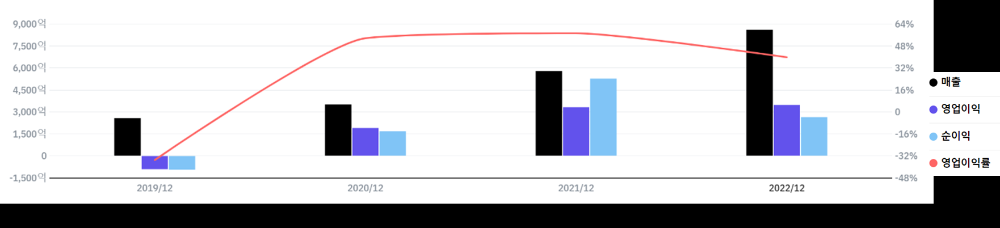
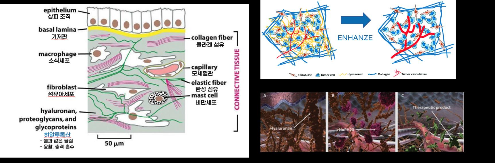
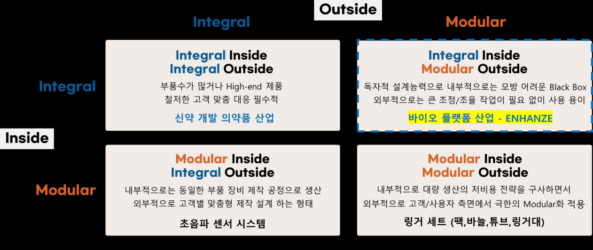
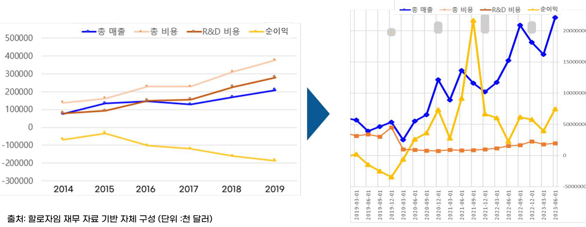

할로자임(Halozyme Therapeutics)은 직원이 약 140명뿐인 글로벌 바이오 플랫폼 기업이다. 그럼에도 2021년 순이익률이 90%에 이르렀고, 골드만삭스는 '금리 인상을 견딜 수 있는 고성장·고수익 상장 기업' 1위로 이 회사를 꼽았다. 본 사례연구는 정맥주사(IV) 약물을 피하주사(SC) 제형으로 바꾸는 인핸즈(ENHANZE) 기술을 가진 할로자임이 어떤 핵심 역량과 혁신 전략으로 세계 1위의 고성장·초수익 기업이 되었는지를 분석한다.
- 바이오 산업에서 플랫폼 기술은 기존 의약품에 적용해 새로운 형식의 의약품을 도출할 수 있는 기반 기술을 의미한다.
- 주요 글로벌 특허 만료에 따라 신약 개발 경쟁이 심화되면서, 바이오 기업들은 기존의 효능을 보존하면서 무한 확장이 가능한 '플랫폼' 기술에 주목하고 있다.
- 본 연구는 IV 제형의 약물을 SC 제형으로 변환시키는 기술을 가진 글로벌 바이오 플랫폼 기업 할로자임의 혁신 사례를 분석하며, 핵심 역량과 더불어 아키텍처 혁신·오픈 이노베이션 전략 등 독보적 시장 경쟁력을 이끈 혁신 전략을 살펴본다.
- 이를 통해 플랫폼 비즈니스의 가치를 공유하고, 기업의 경쟁력 발전을 위해 참고해야 할 혁신의 방향을 제시하고자 한다.
1. 연구 배경 및 목적
글로벌 제조업 영업이익률은 한국을 중심으로 약 5% 수준이며 세계 기준으로도 약 9%에 그친다. 반도체를 제외한 주요 제조업은 매출 대비 순이익이 낮아 자체 투자를 통한 성장에 한계가 있고, 금리 인상이나 팬데믹 같은 외부 위기가 겹치면 산업 자체의 경쟁력을 잃을 위험에 직면한다. 이런 상황에서 재무적으로 탄탄한 기업의 혁신 사례를 분석하는 것은 중요한 과제다.
할로자임은 1998년 설립돼 2004년 나스닥에 상장한 미국 캘리포니아 샌디에이고 소재 기업으로, 주요 사업 분야는 '바이오 플랫폼'이다. 2023년 기준 시가총액 약 6조 5천억 원에 직원 수는 약 140명으로, 적은 인적 자원으로 최대의 아웃풋을 내고 있다. 매출은 2019년 대비 3년간 약 3배 상승했고, 2022년 총매출 약 8,300억 원 중 로열티 수입이 약 4,500억 원이다. 2021년 순이익률은 약 90%에 이르렀다.

바이오 플랫폼과 히알루로니다제 시장
바이오 플랫폼이란 기존 의약품에 적용해 단백질 타깃 물질을 바꿔가며 다수의 후보 물질을 도출할 수 있는 기반 기술을 의미한다. 아키텍처 이론으로 보면 제품 기능과 구성 요소가 일대일로 대응하는 모듈러 아키텍처 형태로 약품의 sub function을 구현하는 도구(Tool) 역할을 한다. 바이오 플랫폼 산업은 할로자임이 최초로 형성하고 성장시킨 시장으로, 빅파마가 베스트셀러 약품에 적합한 플랫폼을 접목하면 적은 비용과 리스크로 새로운 의약품을 개발할 수 있다.
할로자임의 대표 제품군 인핸즈는 히알루로니다제다. 히알루로니다제 시장 규모는 연평균 약 9%씩 성장해, 인간 히알루로니다제 기준 2018년 6천억 원 시장에서 2027년 약 1.5조 원 규모로 성장이 예상된다. 이 시장에서 독보적 점유율을 가진 글로벌 Top 1 기업이 할로자임이며, 이후 유일하게 이 독점 시장에 진출한 기업이 한국의 알테오젠이다.
2. 핵심 역량 분석
2.2 글로벌 최고 수준의 바이오 공학 기술
인핸즈는 피부 체내의 히알루론산(HA)을 분해하는 단백질 Hyal1과 PH20의 일부를 각기 잘라 붙여 하나로 결합한 물질이다. 피부 조직 중 히알루론산을 녹여 SC 제형 약물이 통과할 빈 공간을 만들어, 약물을 체내에 적절한 농도와 속도로 전달하는 약물 전달 플랫폼 역할을 한다. 작은 단백질 분자의 도메인들을 자르고 서로 연결하는 이 기술은 "단백질 공학의 최고 난이도"로 평가받는다.

일반 항체 치료제는 분자량이 150kDa 이상으로 커서 피하주사 시 히알루론산을 통과하지 못하는데, ruPH20이라 불리는 인핸즈의 sub function(히알루론산 분해)을 더하면 SC 제형으로의 변경이 가능해진다. 이 변환의 최종 고객 가치는 뚜렷하다. 기존 정맥주사 바이오 의약품은 투여에 최소 1시간에서 최대 20시간이 걸리지만, 인핸즈로 제형을 바꾸면 5분 내외에 투여가 가능하고, 자가 투약이 가능해 입원 등 추가 의료 비용을 절감할 수 있다.
2.3 바이오 플랫폼 분야 독보적 특허 지식과 노하우
할로자임이 출원한 특허 수는 약 478개로, 이 중 ruPH20(인간 히알루로니다제) 관련 특허가 다수를 차지한다. 제조·용도·제형 등 타입별로 특허 장벽을 세워 경쟁사 진입을 원천 차단한다. 특허 네트워크 분석(위즈도메인·Gephi 활용) 결과, 할로자임 특허는 피인용 수가 전체 2번째로 높고 매개 중심성(Betweenness Centrality)이 매우 높아, 항체와 히알루로니다제를 모두 포함하는 특허를 출원하려면 할로자임 특허 인용 없이는 사실상 불가능한 구조임이 확인된다.
3. 혁신 전략 1: 모듈러 아키텍처 플랫폼 비즈니스
후지모토 교수의 아키텍처 포지셔닝 분석틀에서 가장 강력한 유형은 Integral Inside, Modular Outside(IIMO)다. 독자적 설계 능력으로 내부적으로는 모방이 어려운 블랙박스를 가지면서, 외부적으로는 고객별 큰 조정 없이 사용이 용이해 확장성이 높기 때문이다. 할로자임의 ENHANZE 바이오 플랫폼이 바로 이 유형에 속한다.

2000년대 이후 출시된 글로벌 메가 의약품의 특허가 다수 만료되면서, 제약사들은 시장 점유율 유지를 위해 '추가적인 가치'나 '혁신적 특허 연장 전략'을 확보해야 했다. 할로자임은 효능이 입증된 기존 의약품에 특허받은 SC 제형 변경 물질 ENHANZE를 결합하는 모듈러 형태의 플랫폼 판매·공동개발 파트너십 전략을 추진했다. 예를 들어 로슈의 허셉틴 IV에 인핸즈를 접합해 허셉틴 SC를, 얀센의 다잘렉스 IV에 적용해 다잘렉스 SC를 개발하는 식이다.
이 모델의 강점은 임상 실패 리스크와 비용 최소화에 있다. 임상 2상에서 3상으로 통과하는 비율은 30% 이하이고 그 비용은 최소 천억 원 이상인데, 인핸즈는 이미 상용화된 의약품을 원료(API) 변경 없이 SC 제형으로만 변환하므로 유효성 부족에 따른 실패 리스크가 매우 낮다. 또한 모듈러 아웃사이드 유형이라 로슈 144개, BMS 143개, 존슨앤존슨 94개 등 각사의 방대한 파이프라인마다 신규 계약이 가능해 독점 계약임에도 높은 확장성을 가진다.
4. 혁신 전략 2: 기술 수출 로열티 중심 수익 모델
바이오 기업 대다수는 신약 개발에 평균 15년, 1조 원 이상의 투자가 필요해 적자에 놓여 있다. 나스닥 상장 바이오제약 기업의 약 80%가 적자를 기록한다. 할로자임도 2014~2019년 R&D 비용 증가로 영업이익 적자 위기에 직면했고, 2019년 11월 10년 이상 투자해온 췌장암 항암제 PEGPH20의 자체 개발을 중단하는 결단을 내렸다. 종양학 사업을 폐쇄하며 인력의 55%(160명) 이상을 감축했고, 2020년 기준 약 1,500억 원의 관련 비용을 줄였다.
대신 ENHANZE 기술 수출에 집중하는 마일스톤·로열티 수익 모델을 구축했다. 통상 기술 수출은 반환 의무 없는 초기 계약금 5~7%, 임상 단계별 마일스톤(임상 1상 약 10%, 2상 15~20%, 3상 20~25%), 시판 후 매출 로열티(약 40~50%)로 구성된다. 할로자임은 2006년부터 2022년까지 10곳의 글로벌 제약사와 약 60여 개 물질에 대한 라이선스 계약을 체결했으며, 총 계약 규모는 약 7조 원으로 추정된다.

이 수익 구조는 추가 투자에 따른 것이 아니라 고객사의 임상 성과에 따라 발생하므로 최소 투자 대비 최고의 수익률을 낼 수 있다. 2027년에는 Wave 1~4 ENHANZE 제품에서 1조 3천억 원 이상의 로열티 수익이 예상되며, 2031년에는 Wave 5로부터 신규 수익이 기대된다.
5. 혁신 전략 3: 오픈 이노베이션을 통한 경쟁력 강화
인핸즈로 SC 제형 변환이 가능해졌지만, 일정 시간 동안 적절한 양을 주입해야 하기에 자가 투약에는 여전히 한계가 있었다. 할로자임은 2022년 8월 자체 R&D 부담을 줄이면서 역량을 흡수하는 오픈 이노베이션 전략으로, 동종 계열 최고의 자동주사기(Auto Injector) 기술을 보유한 안타레스 파마를 총 9억 6,000만 달러(약 1조 2,500억 원)에 인수했다.
인핸즈로 IV를 SC 제형으로 바꾼 뒤 안타레스의 자동주사 플랫폼을 접목해 자가 투약이 용이한 신규 제품을 개발했고, 기존 3분 걸리던 자동주사기를 30초까지 단축하는 임상을 진행 중이다. 인수 당해년도인 2022년에 800만 유닛을 판매하며 특수의약품 영역으로 사업을 확대해, 통합적 바이오 약물전달 플랫폼 기업으로서 포지셔닝을 강화했다.
6. 결론 및 시사점
- 인테그럴 핵심 기술 + 모듈러 플랫폼: 할로자임은 글로벌 최고 수준의 단백질 공학 기술과 특허 역량으로 바이오 플랫폼 블루오션을 창출하고, IIMO 아키텍처 형태로 높은 확장성 기반의 지속적 계약을 만들어냈다. 모듈 제품의 sub function이 완제품의 main function 경쟁력을 좌우할 만큼 우월하면, 채택이 필수가 되는 강력하고 안전한 비즈니스 모델이 성립한다.
- 특허 장벽과 수익 모델 혁신: 특허 장벽으로 팔로워의 시장 진입을 차단하고, 자체 개발 중단 후 기술 이전 로열티 중심 수익 모델로 전환해 단계별·지속적 순이익을 극대화했다.
- 타 산업으로의 확장: 차별화된 인테그럴 방식의 핵심 기술과 이를 범용적으로 활용하는 모듈러 플랫폼 제품의 설계·개발은 기업과 국가의 기술 경쟁력 확보에 매우 중요하다. 여기에 시장의 파이를 키우는 오픈 이노베이션과 팔로워 진입 차단 전략이 더해질 때 지속 가능한 마켓 리더가 될 수 있다.